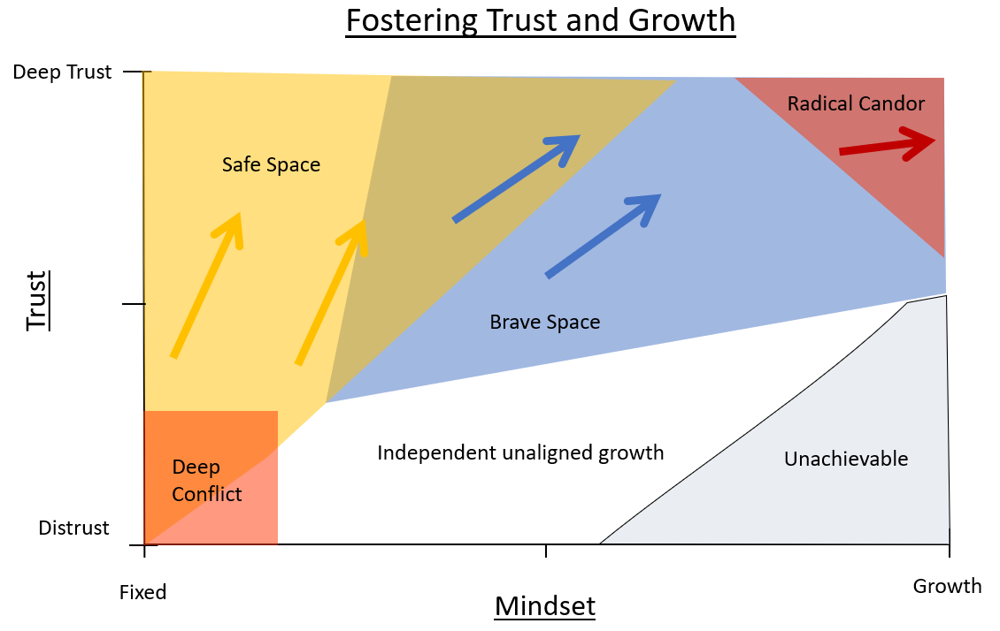
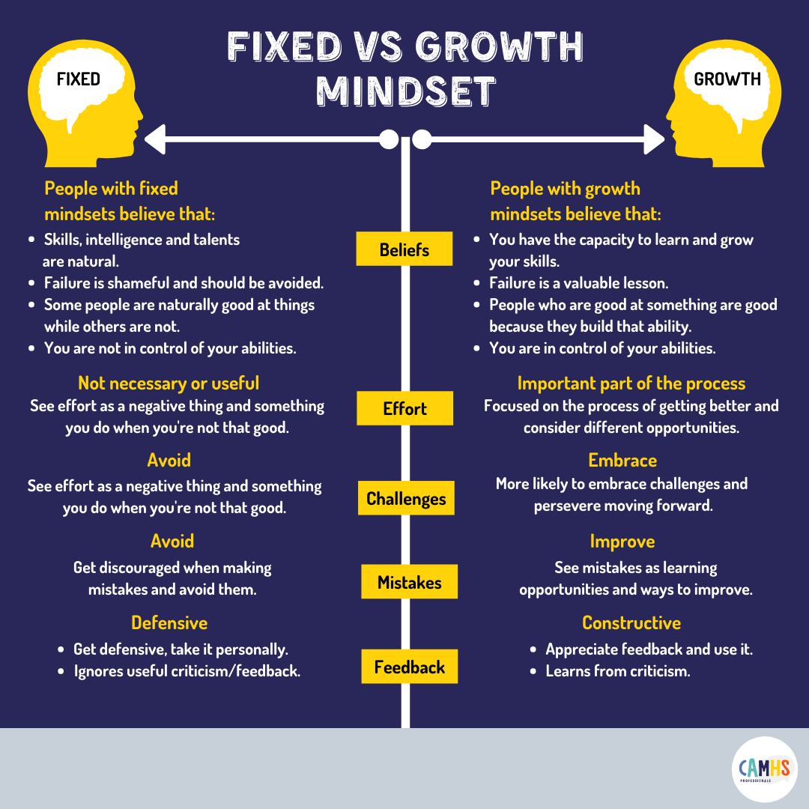
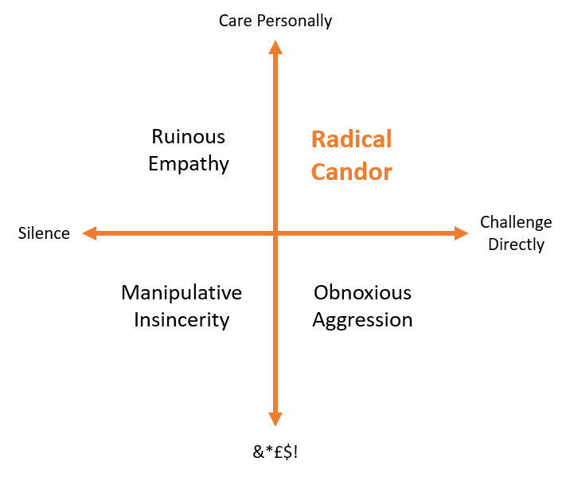
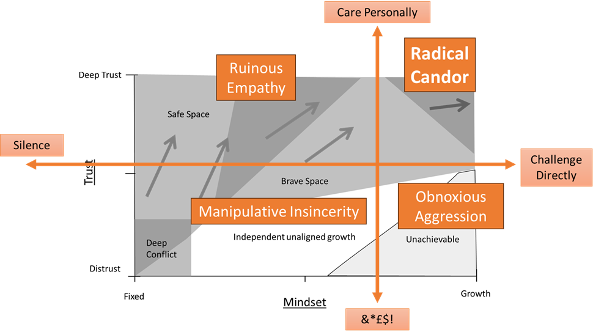
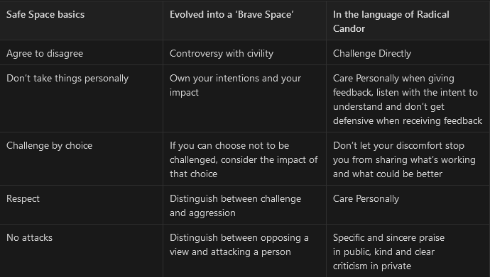

V2 : 05/03/24 ~~V1:18/8/23~~
Synopsis / TLDR
With the rate of change and competition in the world, to fix in place and stagnate is to fail. This applies to everything from business and careers to social progression.
As people we fundamentally seek comfort, safety and satisfaction in our lives, but what if those factors are not in place? Our only choice is to grow and collaborate with others.
There are two key factors to consider if we want to fulfil our needs in the long term: growth and trust. Building a growth mindset helps us take ownership of our own abilities, embrace challenge, and invite feedback from others to drive improvement.
Building trust with others creates a physiologically safe environment where it is OK to be vulnerable, share ourselves, and in turn challenge and learn together.
It is not possible to effectively grow or build trust without doing both.
There are many tools that can help us build trust and growth;
Safe Spaces are a means of building physically and psychologically safe environments where trust can grow and the group can feel comfortable. This is a power tool for supporting marginalised groups to come together.
To grow we need to go a step further and tackle the areas that we find uncomfortable like conflicts and failures.
Brave Spaces extend Safe Space principles by moving from a focus on comfort to collective growth. Encouraging supportive challenge and vulnerability while maintaining safety enables groups to really grow together. For high performing groups you can even begin to use Radical Candor both to show that you “care personally” and to “challenge directly” when giving feedback.

Human challenges
Our lives are full of challenges. It could be how to deliver better stuff with your team, or it could be a personal challenge like becoming a better mountain biker. It could even be something more serious like trauma. To improve in these spaces requires us to grow, develop, take risks, embrace the failures, seek feedback, and take ownership of the challenge.
Humans are social animals that thrive when we tackle things together. To do this we need trust. Trust that we have each other’s best interests at heart when we act, give feedback and support. Trust that we each take accountability for our own actions. And finally, trust that we are in it together so we can safely take risks.
We can explore the idea of growth through the lens of a fixed or growth mindset.
Fixed vs Growth Mindsets
A mindset is a level of thinking that drives our underlying behaviours and actions. Mindsets are regularly thought about as a set of values or beliefs.
A fixed mindset is a belief that your abilities are fixed. This manifests as avoiding ownership of your own skills and, in turn, treating any inspection of an ability to be negative, be it through comparison to others or through receiving feedback. For example, If someone misses a shot in basketball and a teammate offers some tips, the reaction felt is that of threat and jealousy.
This is often seen when someone tries something like a new sport for the first time, isn’t instantly amazing at it, and then stops quickly, stating “it’s not for me.”
A growth mindset is a belief that our abilities can improve, and that we are in control of them. This manifests as pushing out of a comfort zone, taking a risk, and putting effort in. Crucially, when these efforts fail, it is treated as valuable learning and not as a negative indicator of one’s personal value. Gym goers are great examples here where fitness (ability) is something they are in control of, challenge and build up over time.
Crucially, mindsets are not static and are specific to a challenge. Neither are “good” or “bad”. We can’t, and nor is it viable to, try to grow in all things all the time. For me, I have a fixed mindset on my foreign language skills, and that’s OK! This model is to help us recognise how we are approaching different challenges so that we can see the ones that we may want to grow in

Source: CAMHS professionals
Trust & Growth
It’s a team game
Both trust and growth are big priorities for all of us. We all want to feel safe in ourselves and with the people around us, and everyone has something they wished they were better at. While trust and growth can be pursued by individuals, it is likely impossible for us to reach the full potential of either without other people involved.
For Diversity and Inclusion, it’s literally in the name. You can’t have inclusion by yourself: it’s about a group or society becoming a safer place for diversity.
Even for skills that appear to be solo like archery or becoming a quantum physicist, you are going to hamper yourself if you see effort and challenge as a negative.
Trust without growth
If ambition is solely built on trust and comfort for yourself then there are some easy pitfalls.
One route would be to simply look for the people that look and think like you, and just hang out with them. Exclude those who are different, and you will end up with a group of like- minded people who support each other…
There are so many red flags with this, from echo chambers to creating “us vs them” mob situations, that it’s hard to list them all. It is questionable if this would even provide real trust, as stepping out of line would remove it pretty quickly.
Trust grows through shared experience and challenge.
Growth without trust
It’s certainly possible to grow without trust. You can embody the mindset internally, believe that your skills are your own to improve, and work on them. You can even take your own feedback from failure as a learning experience, even if you treat feedback from others as an attack. You will end up relying on a single person’s opinion (your own), but you will certainly get somewhere.
The problem here is that, depending on the ability at hand, the most impactful growth happens at a team, not an individual, level. It doesn’t matter how good a basketball shooter you become: if you never learn to play with your team, you will still lose. Even harder is the question of who gets blamed at that point?
A situation I have found myself in a lot as an agile coach is when I have worked with one of a group of teams, growing and building trust with them, then turned to the other teams who look at me like a monster vomiting post-it notes. I may have supported the “tyres” team to be become rounder, but the other car parts haven’t had a chance to build that trust, so are quite happy to stay rusty and sometimes on fire!
All together now
I posit that you cannot have true growth or true trust without the other.
Building trust happens through group growth.
Growth of our collective abilities and knowledge requires trust and collaboration.
The level of trust or the growth mindset of those involved will dictate the speed and approach you can take in building the other.
Approaches
There are a range of concepts and mechanisms aimed at supporting groups of people towards trust and growth.
Safe Space
An environment where individuals feel physically and emotionally secure, where they are free from judgment, harassment, and discrimination. In a Safe Space, individuals feel **comfortable **expressing themselves and sharing their experiences.
The concept originated from the LGBT+ community as a means of creating a discussion space free from homophobia. The term is now used ubiquitously by many businesses, charities and medical spaces to denote an inclusive space free of harassment.
Safe Spaces are a concept that can either be applied in its own right, such as creating a discussion space for a marginalised group, or as part of something else, such as a training session.
Brave Space
A place where individuals feel encouraged to speak up and share their perspectives, even when they might be uncomfortable, challenging, or outside the norm. In a Brave Space, individuals are expected to speak freely, confront their biases, challenge their assumptions, and engage in constructive dialogue. A Brave Space is where individuals feel empowered to take risks, make mistakes, and **learn **from one another.
I first became aware of Brave Spaces from speaking to a clinical psychologist who supports cancer patients with trauma. They explained that, while making an environment as safe as possible is key, to do this without prompting patients to work through their trauma is ineffective as a treatment. This article is in no way going to try and represent medical opinions or practice, but if this simple concept can aid us in tackling some of the hardest challenges imaginable, then it should work for our day-to-day work and team challenges.
Radical Candor
An approach developed by Kim Scott to maximise the value of feedback. The key principle is that to illicit the most learning and growth, feedback needs to be given in a way that shows you “care personally” about the person, while also “challenging directly”.
To not have either of these elements mutually understood will lead to “Ruinous Empathy”, “Obnoxious Aggression”, or “Manipulative Insincerity”.

There is more to the concept, but the point is that to have high performing teams, you need to foster collaboration through robust and direct feedback. This is probably one of the hardest tools to use. I have had at least one experience where I pushed myself to share some tough feedback and it was both intense and emotionally draining, even with a decent amount of trust between us. Ensuring whoever you are talking to trusts that you care personally is critical.
Safe Candor-ous Bravery?
These different spaces and tools can be aligned to the level of trust and growth.
As with everything, regardless of the intent, execution is key. A Safe Space certainly has the capacity to help people grow, but with its core tenets being comfort and security, it is most powerfully used as a first step to building basic trust from a place of deep conflict.
By comparison, a Brave Space takes this a step further and layers the idea of a Safe Space with that of a Growth mindset. It has a clear definition and aim to focus individual and group growth.
Finally, you get the practice of Radical Candor which, for me, is like a sledgehammer towards growth, with a high trust requirement. Getting this wrong is far more detrimental than the other tools, however that trust can be built up by starting with safer challenges.
Mapped together
We can map the approaches together, balanced against trust and mindset, onto the below chart. This chart is an illustration, not a mathematical formula.
The elements not yet directly mentioned are: Deep conflict - the reason why these spaces were created. It is a place of hurt and active distrust of intervention. This could be a group of marginalised people, or even a team that has fallen out and lost its ability to communicate.
Independent unaligned growth is when we are working on our own abilities and embody elements of a growth mindset, but in the end are limited by doing it solo and lacking trust in others. This makes the bottom right corner unachievable. Even if individuals have a growth mindset, a group is never going to learn and grow without a base level of trust.
Alternative map
A different way at looking at how Radical Candor fits in is to look at the overall model, rather than the practice as it is above. The purpose of the model is to encourage us into the top right corner of caring and challenge which, with a little creative license, you can line up with Trust and Growth

This view is great for demonstrating how Safe and Brave Spaces can move you towards a point where your feedback is trusted, whilst also driving radical growth.
So how do we do it? (implementation)
A good starting point is to summarise the different ground rules you might use to create the different spaces.
Ground Rules

Table iterated and adapted from Kings College London : How can I set them up?
Whilst giving something a name adds a level of formality and weight to something, these concepts are exactly that - concepts. Whether you are hosting or facilitating a discussion, or there as a participant, you can observe, implement, and lead by example in all of these behaviours.
Start with observation
- Take a moment to observe who you are with and how they are acting. Is this a trusting space? Really put yourself in the others’ shoes and try and feel how they feel. Do they feel safe and trusted?
- Is everyone on the same level, or are there individuals in the group that bring additional trust? Does anyone make it feel less safe?
- Do the outcomes of the group meet their potential? Are there robust discussions on how to improve and be more effective? Or do issues get ignored?
Actions to consider
- Be brave and lead by example. Real growth for a group comes from little acts of leadership like sharing a vulnerability or taking feedback as well-intended learning. If you can show that this is ok to a group, then others will follow suit.
- Rather than being an individual rescuer, propose an appropriate ground rule or approach to the group. If the group agrees, then they will start to collectively hold each other accountable.
- Even if the group doesn’t agree, it brings an issue of trust out into the light. This starts us down the path to acceptance and improvement.
- An example of this I like to use whenever I facilitate is “the right to pass”. This can be used at any time, but it’s clarifying to the people you speak to that it is ok, and safe to say they pass on your questions.
- Reach out to others. It’s so easy to fall into an “us vs them” mindset if we haven’t talked to someone one-to-one. Support others in need, or get to know someone you haven’t aligned with thus far. A short walk and coffee break can break down so many barriers.
- Consider if your group needs any outside support. Getting a facilitator to help the group navigate a difficult topic in a truly neutral way can really help get past residual distrust.
Coaching
While it doesn’t feature on the chart, coaching and supporting these different spaces or approaches to kick off is also key. (Fourth wall breaking - I am coaching through teaching right now!!!)
For me the core purpose of coaching (agile or otherwise) is to support individuals, teams and organisations toward a growth mindset. Teaching a person how to fish is all well and good, but if you can help people embody the idea that they can grow, then they will not only keep getting better at fishing themselves, but also evolve when the world changes and the fish are gone. Even if you are in a good position, to be static or fixed is to fail over time.
Finer detail
Deeper details on implementing each of these elements are articles in their own right, so for specifics, please refer to the resources at the bottom or links throughout.
Setting up a safe space in general and at work
Setting up a brave space
The other side of the coin
These approaches have grown from individual or group experiences to the point that they have been formalised and advertised globally. Naturally, people have taken this and either gotten different results, or simply disagree on a principle level.
Safe Space criticism
Safe Spaces by definition prioritise safety, comfort and the bringing together of a group over discourse. This can be, by design, discriminating. For example, Safe Spaces for women fleeing domestic violence are very unlikely to allow men.
The most vocal challengers to the idea focus on their use in universities, where they take issue with the impact on free speech and debate. This is inherently tied up with political thinking and “de platforming”. University student unions have turned down speakers from presenting on campus on the basis of not being safe for marginalised groups, be it through religious intolerance, publicly homophobic views, or similar.
One example from a highly debated case at Cardiff University in 2015
I think is important to recognise the “thing” you are trying to make safe, and why you are doing it. There is a big difference between providing a marginalised group with a space to come together to support each other, and an intellectual safe space that avoids ideas being challenged. There is an obvious grey area problem in my last statement, but if you are looking to harass a group focused on supporting a legally protected characteristic, then you are very unlikely to be in the right.
Brave Space criticism
Brave Spaces is the newer concept on the block and has grown from problems seen in Safe Spaces. That said, there are still issues.
Elise Ahenkorah highlights how the concept of a “Brave” Space fails to represent the experiences of those from diverse backgrounds, who have to be brave every day to work within organisational culture. She promotes the concept of Accountable Space as an alternative, stating that:
“Aligning your intent with action is the true test of commitment”
This is a really interesting take and direction that needs more exploration. This challenge is also recognised by other sources as something to balance within your Brave Space.
So far, I have only found the derivative posts explaining this concept and not the root source (supposedly UCLA). This blog, however, has been cited as the backing for a range of organisations’ policies on D&I.
Radical Candor criticism
Radical Candor is presented as a management technique and is born from an approach to help “seniors” to support their “juniors”. This doesn’t mean it can’t be used between peers, but it is inherently different from the aims of inclusive Safe Spaces. It’s focused on finding the sweet spot between constructive challenge and “being a jerk”.
To reach this maximum feedback value, there are many elements that come into play, for example, gender and culture.. However, to go from zero to “Radical Candor” is not a realistic prospect, so most critics simply say the approach doesn’t work.
My take, as alluded to throughout the article, is that this is a reasonable “long term goal”, but you need to start by building up psychological safety and trust first.
Resources & sources
- https://brenebrown.com/podcast/building-brave-spaces/
- https://www.radicalcandor.com/wp-content/uploads/2021/11/Radical-Candor-One-Pager.pdf
- “Safe and Brave Spaces Don’t Work (and What You Can Do Instead)”
- https://blogs.kcl.ac.uk/activelearning/2020/10/28/safe-spaces-and-brave-spaces/
- Conversations with Andrew - NHS Clinical Philologist (2023)
- https://en.wikipedia.org/wiki/Radical_Candor
Note from the Author:
I started this article wanting to talk about the new concept of Brave Spaces. Through the act of writing, I found that, once again, the crux of what I want to support people with is the idea of a growth mindset. Hopefully, in this version two, I have struck the right balance between broadly sharing a range of deeper concepts while linking them together into a bigger picture. I have only just scratched the surface of this topic so will be looking to iterate on this as you all hopefully offer feedback and insights, along with my own continued research and experimentation.
Next
My next iteration is absolutely going to include linking in the Kanban Evolutionary change model, which I recently discovered I was already embodying, but now have the words to share.
We face many challenges in today’s world, from personal, to group, to business. For some of these, to fix in place and stagnate is to fail. Building both a growth mindset and a trusting culture are essential if we want to continuously adapt, improve and succeed in the long term. It is not possible to effectively do one without the other. Approaches like Safe and Brave spaces can help us build up both these factors and support us toward high-performing teams where radical candour is possible.